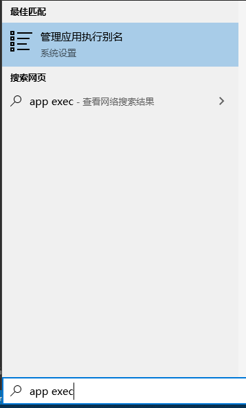
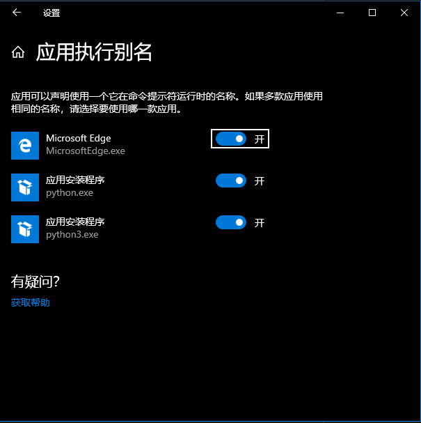

自Qt 5.15开始，Qt对于开源用户只提供源码包的下载，不再提供预编译安装包。这一策略或是为了促使更多人购买Qt的商用授权。无论对这一决策的态度如何，自Qt 5.15开始，无论是使用静态库还是动态库，编译Qt都将是一个必不可少的步骤了。
1 源码下载
Qt 5.15.1的下载地址：Qt 5.15.x source packages
也可以从国内的镜像下载，Qt的镜像列表：https://download.qt.io/static/mirrorlist/
下载qt-everywhere-src-5.15.1.zip后解压，这里假定将源码解压到qt5.15.1-src目录。
2 编译环境搭建
在Windows环境下从源码编译安装Qt，除VS开发环境外，还需要先安装Perl和Python。此外，还有一些可选的三方库可以安装，如OpenSSL Toolkit、ICU、ANGLE，这些库可以为Qt提供额外的特性，但并不是必要的，参见Qt官方文档对编译环境的描述：Qt for Windows - Requirements Qt 5.14。
2.1 Visual Studio
Qt可以使用VS 2015，VS 2017，VS 2019进行构建。这里选择使用VS 2019，从https://visualstudio.microsoft.com/zh-hans/ 下载安装即可。
2.2 Perl
Perl的Windows版本有2种可以下载，分别是ActivePerl和StrawberryPerl。其中ActivePerl需要注册后下载，StrawberryPerl可以直接下载，推荐StrawberryPerl。
StrawberryPerl下载地址：Strawberry Perl for Windows
安装时默认会添加perl到环境变量。安装完成后，可以通过命令行执行perl -v测试环境变量是否安装成功。
2.3 Python
对于Python，Python 2只被qpdf、qwebengine等几个模块需要，如果不需要这几个模块可以只安装Python 3。这里选择只安装Python 3。
在Windows 10下安装Python的注意事项
从Windows 10 2019 五月更新以来，微软试图把 Python 带到 Windows，因此在
C:\Users\%USERNAME%\AppData\Local\Microsoft\WindowsApps路径下加入了python.exe、python3.exe几个占位文件。这几个文件并非真正的python解释器，执行后会弹出Windows Store页面并定位到Python App的详情页。由于这几个文件也处在系统的PATH环境变量内，当用户执行
python时有可能会调用占位文件而非实际的python解释器，从而导致运行错误。可以通过以下步骤关闭该设置：
输入
app exec打开Windows的“应用程序别名”界面
关闭为
python.exe和python2.exe设置的别名
下载Python：Python Releases for Windows Python.org
安装时选择将Python加入环境变量。可以在命令行内输入python，检查Python解释器是否会运行。
2.4 LLVM
从Qt 5.11开始，QDoc使用Clang来解析C++源码。QDoc是Qt用于生成文档的工具。如果需要构建QDoc，那么需要安装LLVM 6.0以上版本。参见Installing Clang for QDoc。
LLVM的下载地址：https://releases.llvm.org/download.html
运行下载的预编译安装包安装LLVM时，建议启用将LLVM加入PATH环境变量的选项，以便让QDoc运行时能链接到libclang.dll。
注意其它软件安装时可能附带安装了
libclang.dll，如doxygen。因此配置PATH变量后建议运行where.exe libclang.dll确认是否能正确找到LLVM的libclang.dll
此外，由于Windows下的预编译包没有llvm-config.exe文件，需要配置LLVM_INSTALL_DIR环境变量，将其值设为LLVM的安装路径，以便能在编译时找到LLVM。环境变量可以设置到系统内，也可以在命令行内临时设置：
C:\> set LLVM_INSTALL_DIR=C:\Program Files\LLVM3 编译Qt
Qt源码根路径下有configure脚本文件（该文件的作用与CMake类似，用于生成Makefile），运行该脚本并传入参数即可生成对应的Makefile。在生成Makefile后便可以运行nmake工具执行编译。
3.1 设置环境变量
编译时我们需要打开MSVC的命令行环境x64 Native Tools Command Prompt for VS 2019，以便使用nmake等工具（如果想编译32位版本的Qt，则可以打开x86 Native Tools Command Prompt for VS 2019）：
**********************************************************************
** Visual Studio 2019 Developer Command Prompt v16.4.5
** Copyright (c) 2019 Microsoft Corporation
**********************************************************************
[vcvarsall.bat] Environment initialized for: 'x64'
C:\Program Files (x86)\Microsoft Visual Studio\2019\Community>切换到Qt源码路径：
cd /d D:\qt5.15.1-src由于生成的二进制文件如qmake、moc或第三方工具bison、flex等需要参与Qt的编译工作，因此要将这些文件的路径加入环境变量：
SET _ROOT=D:\qt5.15.1-src #源码根目录
SET PATH=%_ROOT%\qtbase\bin;%_ROOT%\gnuwin32\bin;%PATH%3.2 配置
通过configure脚本可以指定安装位置、要生成的Qt模块、要使用的三方库、编译选项等，详情参见https://doc.qt.io/qt-5/configure-options.html
一般情况下，指定Qt的安装位置、要使用的配置即可：
configure
-prefix "D:\qt" #指明安装的目录
-release #指明使用release配置，也可以切换为-debug或-debug-and-release
-opensource #使用开源协议
-confirm-license #接受协议
-mp #编译选项，指明多核编译随后configure会生成必要的代码，检测编译环境，并列出将生成的Qt的模块。
3.3 编译
在MSVC环境下，可以使用nmake工具解析Makefile并进行编译。
新版的MSVC可以进行多线程编译，旧版本的MSVC自带的nmake没有多线程编译功能，有一个替代功能的软件jom可以进行nmake的多线程编译，下载地址：http://download.qt.io/official_releases/jom/
使用nmake进行编译：
nmake或使用jom：
jom #如果jom路径不在PATH环境变量内，则需要指定jom的具体路径编译完成后，使用nmake或jom安装Qt到指定位置：
nmake install
#jom install4 生成文档
在Qt 5.15以前，Qt的文档可以通过预编译安装包一起安装，打开Qt Assistant即可使用。在Qt 5.15以后，由于不存在预编译安装包，因此文档也需要单独生成并添加到Qt Assistant内。
qmake使用QT_INSTALL_DOCS环境变量确定文档的安装位置，可以执行qmake -query检查该设置。
生成文档：
nmake docs
#jom docs安装文档：
nmake install_docs
#jom install_docs注意，在生成文档前，务必确认
qdoc工具已生成且能正常运行
5 安装Qt Creator
Qt Creator需要单独安装，有预编译安装包可用：https://www.qt.io/offline-installers
运行安装包时，需要输入Qt的注册账号和密码。如想跳过这一步，可在Windows的”网络连接“内禁用所有互联网连接。
注意，在安装了LLVM后，Qt Creator启动时会自动运行
lldb --version以确定lldb是否可用。lldb依赖于python36.dll但LLVM的预编译安装包又未附带该文件，这会导致启动Qt Creator时弹出python36.dll无法找到的错误。这是LLVM的一个bug，见https://bugs.llvm.org/show_bug.cgi?id=44087 。目前的解决方法是，自行下载
python36.dll并放到lldb.exe的同级目录下。当然，如果不再需要LLVM也可以直接卸载。